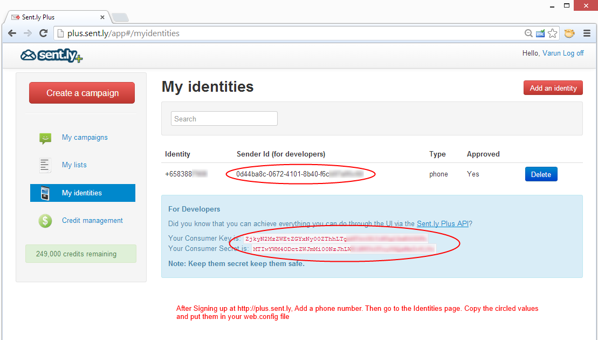

This Angular tutorial was brought to you by the Sent.ly and Sent.ly Plus team.
We are thankful to Red Gate software for providing us mentoring in Cambridge and giving us this opportunity to share this with you!
To get this tutorial fully functional, please sign up for an account at:
http://plus.sent.ly
After signing up, please add your phone number. Then, go to the "My Identities" page by clicking "My Identities"

Please change the SentlyPlusConsumerKey, SentlyPlusConsumerSecret and SentlyPlusSenderIdvalues in the web.config file of this app to enable actual SMS sending
For detailed documentation of our APIs, please visit:
Sent.ly Plus API Documentation
Sent.ly Documentation